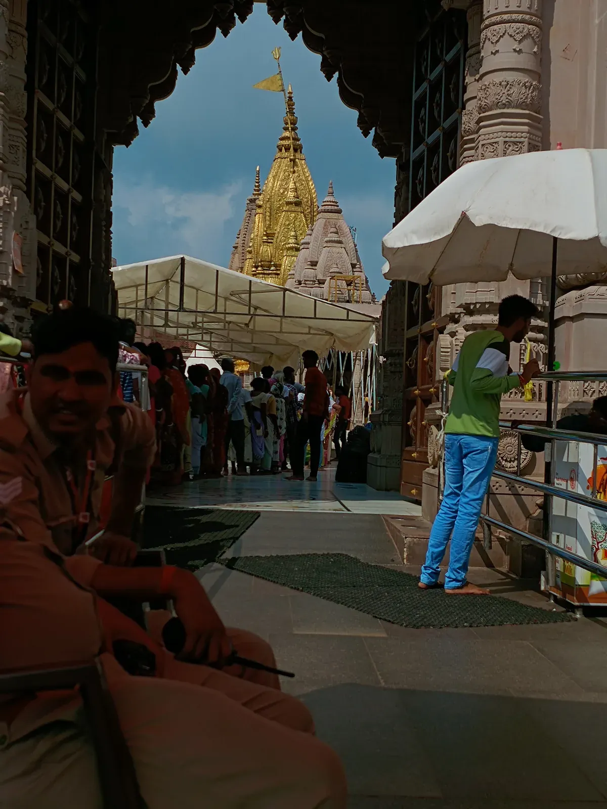
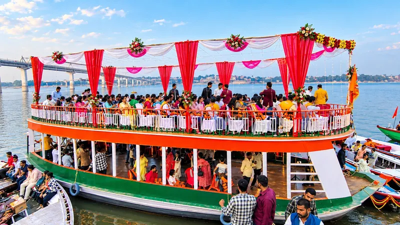
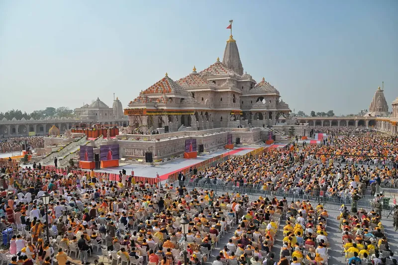
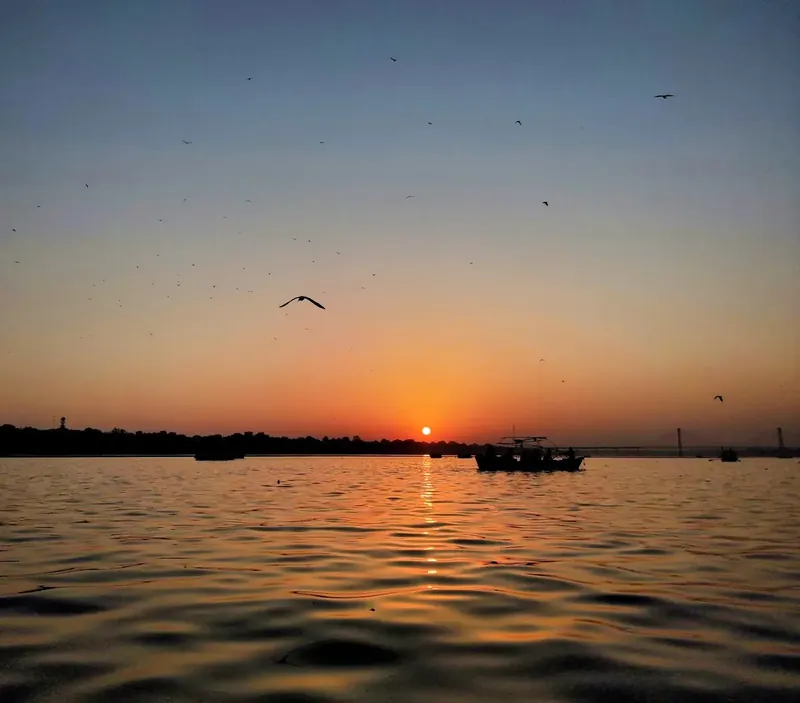

Home›Packages
Varanasi Tour Packages
From a quick weekend in Kashi to Prayagraj and Ayodhya — plans built around you.
Enquire on WhatsAppVaranasi Tour Packages
Suggested plans for different trip lengths. Every package can be changed — tell us your dates, group size and interests.
1 Night 2 Days Varanasi Tour
- Day 1: Arrive, check in, Kashi Vishwanath darshan and evening Ganga Aarti
- Day 2: Sunrise boat ride, Sarnath visit and departure
2 Nights 3 Days Varanasi Tour
- Day 1: Arrival, temples and evening Ganga Aarti
- Day 2: Morning boat ride, local sightseeing and Sarnath
- Day 3: Assi Ghat and departure
3 Nights 4 Days Varanasi Tour
- Day 1: Arrival and Ganga Aarti
- Day 2: Boat ride, temples and the old city
- Day 3: Sarnath and Ramnagar Fort
- Day 4: Free morning and departure
4 Nights 5 Days Varanasi Tour
- Day 1–2: Varanasi ghats, temples and Ganga Aarti
- Day 3: Sarnath and local food walk
- Day 4: Day trip as per your interest
- Day 5: Departure
Varanasi, Prayagraj & Ayodhya
- Varanasi: ghats, Kashi Vishwanath and Ganga Aarti
- Prayagraj: Triveni Sangam
- Ayodhya: Ram Mandir and nearby temples
- Cab and stays arranged to suit your dates
Family & Group Packages
- Custom itinerary for your group size
- Cab, boat and hotel arranged together
- Tell us your dates and interests
These are sample itineraries. The final plan, inclusions and rates are confirmed with you on WhatsApp.
Add to Your Package


